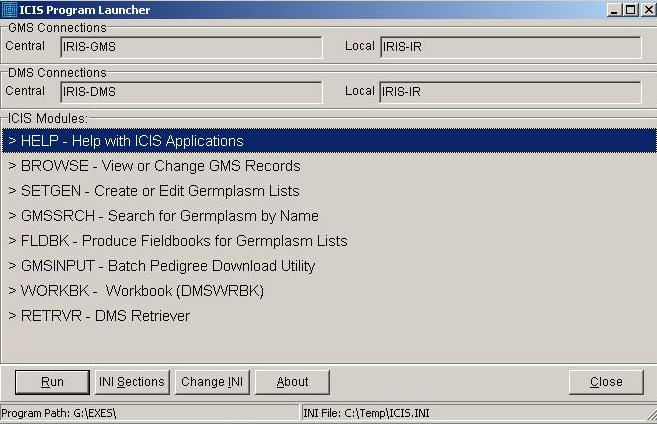
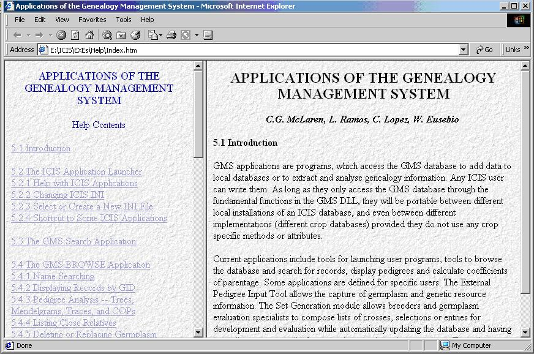

TDM LAUNCHER
From ICISWiki
Contents |
A. APPLICATION PROGRAMS
APPLICATIONS OF THE GENEALOGY MANAGEMENT SYSTEM
C.G. McLaren, L. Ramos, C. Lopez, W. Eusebio
1.1 THE ICIS APPLICATION LAUNCHER
ICIS applications read configuration parameters from initialization or INI files. These files define the specific databases to be used through connect strings or ODBC data source names (4.2.4). When more than one ICIS installation is present in the same computer, one working session may use different databases from other working sessions. To differentiate one installation from another, separate INI files may be maintained. These may be stored in individual directories, or collected together in a single directory.
The ICIS application launcher (Figure 1.1.1) allows the user to view on-line help, or run ICIS applications from a menu list. The launcher also allows users to select, create or change an INI file for a particular session.
When launcher is run, it checks whether or not an argument, which refers to an INI file, is passed with it. If none is passed, it first checks if there is an ICIS.INI file in the windows temporary directory. If ICIS.INI exists, it uses this file as the default INI file. Otherwise, an open dialog window appears to allow user to either select an existing INI file or create a new one. If a specified INI file does not exist, a window appears to allow user to enter the necessary ICIS key values. Next, launcher reads a menu of applications from the text file LAUNCHER.TXT and displays these as a menu. The menu text file can be customized for each user.
To launch any of the applications on the menu, highlight the line of a desired application. Either double click on the highlighted line, or click <Run>. Launcher will run the selected application.
Figure 1.1.1. ICIS Application Launcher

Create a New INI File
When a specified INI file does not exist, a window as in Figure 1.1.2 appears. Enter new values in the spaces provided. After all values have been entered click <OK>. A new INI file is created and saved in the specified directory. The structure of the INI file is described in 4.2.4.
The usernames and passwords associated with each DSN need only be completed if the RDBMS requires them to allow access. However, ICIS applications may also check them against ICIS usernames and passwords and thereby avoid asking for the ICIS details each time the application is run. If the RDBMS requires a username and password, then the ICIS ones can be selected to be the same and the applications will still be able to log on without user intervention.
Figure 1.1.2 Specifying ICIS key values
Modify Current INI File
To change contents of the current INI, click <View Sections>. A window as in Figure 1.1.3 appears. All section names in the ICIS.INI file are displayed on the left side of the window.
The keys and corresponding values are displayed on the right side of the screen of the selected section.
To delete an entire section, highlight the section and click <Delete>. All keys belonging to the section are also deleted. The following sections are essential to an ICIS application to run, and therefore cannot be deleted: CENTRAL GMS, LOCAL GMS, CENTRAL DMS, LOCAL DMS, and WORKBOOK.
To add a section to ICIS.INI, enter the section name to add on the left space provided and click <Add>. The keys and corresponding values can be entered on the right side of the screen. After entering all keys, click <Done>.
To edit a key value, highlight the desired key and click <Edit>. On the space for the key’s value, enter a new value. Click <Done>.
Figure 1.1.3. Modifying Contents of an INI File
To delete a key, highlight the key to delete then click <Delete>. The key will be removed.
To add a key to the highlighted section, click <Add>. Enter the new key name and its corresponding value on the space provided. Click <Done>.
When finished with the changes, click <OK>. Changes will be written to the user-specified INI file, and the ICIS.INI in the temporary directory.
To cancel an operation at any time, click <Cancel> or press <Esc>. Changes will be discarded.
Specify Another INI File
To completely change a current INI file with another, click <Change INI>. An open dialog box appears. Select an existing INI file, or specify a new INI filename in the desired directory. Click <OK>. If a new INI file is specified, follow the steps described in 1.1.1.
Help with ICIS Applications
Help information for ICIS applications can be viewed by selecting the help option displayed in the launcher menu. When help is run, the default browser, i.e., Internet Explorer or Netscape, loads the table of contents containing the help topics for the user to select from.
The help window is divided into two panes: the left displaying the table of contents, and the right pane displaying the selected topic. The default topic displayed in the right pane is the introduction, as in Figure 1.1.4.
Use help as you would use your internet browser. Help topics can be browsed by jumping from one topic to another – it is not necessary that the topics be viewed sequentially. To view a topic, click on the link in the table of contents. A visited link displays a different colour other than blue.
Figure 1.1.4. Help with ICIS Applications

Customize the Launcher Menu
The launcher’s menu is read from LAUNCHER.TXT. The launcher first looks for this file in the path specified in the parameter, if one was passed. Otherwise, it looks in the program directory, i.e., where the ICIS applications reside.
The LAUNCHER.TXT and a desired INI file in a different folder other that the program directory can be specified. The program parameter must be in the following format:
[LauncherFullPathName]LAUNCHER.EXE [/workdir:][INIFullPathName][INIFileName]
where
LauncherFullPathName is the full path name where LAUNCHER.EXE is;
/workdir specifies a new directory, specified by the INIFullPathName;
INIFullPathName is the full path name of where the INI file is. The INIFullPathName can also be where LAUNCHER.TXT is. If no INIFullPathName is specified, launcher will use the path where LAUNCHER.EXE is; and
INIFileName is the name of the INI file.
An example is: E:\ICIS\EXEs\LAUNCHER.EXE
/workdir:F:\MyDocs\INIFiles\MyINIFile.INI.
Each menu item consists of one line: a name or description of an application, followed by a comma and an application identifier (Figure 1.1.5). An application identifier can include the full pathname of the file to load. If no path is specified, the launcher’s path is assumed. The identifier can also be a section and key where the path can be found in the current INI file. This allows the launcher to launch applications which are customized for particular installations or users. For example, different users of the same local database may have different query builders.
Figure 1.1.5 Contents of LAUNCHER.TXT
Help with ICIS Applications,HELP\INDEX.HTM View or Change GMS Records (BROWSE),BROWSE.EXE DMS Workbook,DMSWRBK.XLA DMS Retriever,[RETRIEVER]FILENAME
In the first line of Figure 1.1.5, the extension, HTM, is normally associated with an internet browser, such as NETSCAPE or INTERNET EXPLORER. When this item is run from the launcher, the help contents in the directory \ICIS\EXES\HELP\INDEX.HTM will be displayed in the associated explorer. The second line contains an executable filename, BROWSE.EXE, while the third line contains an Excel macro name, DMSWRBK.XLA. In the last line, the application associated with the DMS Retriever can be found by retrieving the value of the key FILENAME in the [RETRIEVER] section of the current INI file. Note that the key value must contain a full pathname to be able to launch the application; otherwise, a warning appears.
IMPORTANT: There are ICIS applications, i.e., SetGen, GMSSrch, and Browse that use the windows temporary directory for temporary storage. The launcher also uses this to place a copy of the selected INI file. To determine the temporary directory, the launcher uses the WinAPI function GetTempPath. The GetTempPath function finds the environment variable “TMP” and returns the path where TMP points to as the temporary directory. If no TMP variable exists, GetTempPath looks for “TEMP” and returns the path pointed by TEMP. If both TMP and TEMP do not exist, GetTempPath returns the current directory.